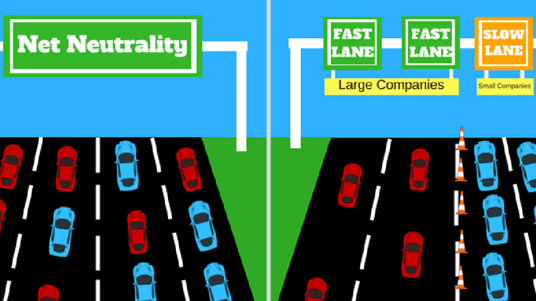

Es el principio por el cual los proveedores de servicios de Internet y los gobiernos que la regulan, deben tratar a todo tráfico de datos que transita por la red de igual forma indiscriminadamente.
Existen empresas que transmiten contenido de manera legal, pero también transmisiones ilegales.
Cualquier empresa o persona puede innovar para hacer negocios, empezando todos desde la misma posición.
No hay censura para contenido siempre que cumpla las obligaciones legales.
Existen empresas que transmiten contenido de manera legal, pero también transmisiones ilegales.
Dependiendo el tipo de transmisión si no existiera la neutralidad, los ISP podrían asignar prioridad y velocidad, esto causa ralentización en algunas señales.
El contenido considerado ofensivo no es filtrado en su totalidad solo cunado se implementa herramienta, como por ejemplo en contenido familiares.